# Specify colors
leachate_colors <- c("grey60", "#C994C7", "#980043", "#67001F")
stage_colors <- c("red", "blue", "green")
# Annotation colors for pheatmap
ann_colors = list(
leachate = leachate_colors,
stage = stage_colors
)Step 5: Initial Exploration of Count Matrix
Use DESeq2 and count transformations to perform exploratory data visualizations and identify any sample outliers
1 Background
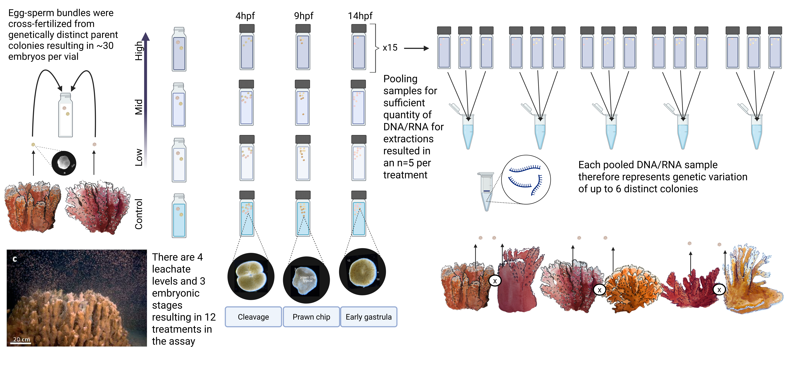
2 Goals
Create initial DESeq Dataset Object to use in exploratory data visualizations
Identify & remove any outliers
2.1 Inputs
- unfiltered gene count matrix
2.2 Outputs
output/05_explore/gcm_filtor.csvfiltered gene count matrix with outlier samples removedmetadata/metadata_or.csvfiltered metadata removing outlier samplesoutput/05_explore/pca.pngexploratory principle component analysis (PCA) visualizationoutput/05_explore/zscore_heatmap.pngexploratory heatmapoutput/05_explore/sig_genes.csv44 significant genes that show significant (p<0.05) interaction between leachate and stage
Resources:
3 Setup
3.1 Install packages
# Install pak itself if not already installed
if (!"pak" %in% rownames(installed.packages())) {
install.packages("pak")
}
# Use pak to install CRAN packages
pak::pak(c(
"tidyverse",
"viridis",
"pheatmap",
"vsn",
"plotly",
"mdscheuerell/flexoki"
))
# Install Bioconductor packages using pak (prefix with "bioc::")
pak::pak(c(
"bioc::DESeq2"
))3.2 Load packages
library(tidyverse)
library(viridis)
library(DESeq2)
library(vsn)
library(pheatmap)
library(plotly)
library(ggrepel)
library(vegan)3.3 Load inputs
3.3.1 Metadata
metadata <- read_csv("../../metadata/metadata.csv")
# set factors
metadata <- metadata %>%
mutate(
collection_date = as.Date(collection_date, format = "%d-%b-%Y"),
stage = factor(stage, levels = c("cleavage", "prawnchip", "earlygastrula")),
leachate = factor(leachate, levels = c("control", "low", "mid", "high")),
spawn_night = factor(spawn_night, levels = c("July 6th", "July 7th", "July 8th"))
)
# View metadata structure
str(metadata)tibble [63 × 9] (S3: tbl_df/tbl/data.frame)
$ sample_id : chr [1:63] "101112C14" "101112C4" "101112C9" "101112H14" ...
$ collection_date: Date[1:63], format: "2024-07-08" "2024-07-08" ...
$ parents : num [1:63] 101112 101112 101112 101112 101112 ...
$ group : chr [1:63] "C14" "C4" "C9" "H14" ...
$ hpf : num [1:63] 14 4 9 14 4 9 14 4 9 14 ...
$ stage : Factor w/ 3 levels "cleavage","prawnchip",..: 3 1 2 3 1 2 3 1 2 3 ...
$ leachate : Factor w/ 4 levels "control","low",..: 1 1 1 4 4 4 2 2 2 3 ...
$ leachate_mgL : num [1:63] 0 0 0 1 1 1 0.01 0.01 0.01 0.1 ...
$ spawn_night : Factor w/ 3 levels "July 6th","July 7th",..: 3 3 3 3 3 3 3 3 3 3 ...3.3.2 Gene count matrix
gcm <- read.csv("../../output/04_count/gene_count_matrix.csv", row.names="gene_id", check.names = FALSE)4 Check order
From DESeq2 vignette under Count matrix input:
It is absolutely critical that the columns of the count matrix and the rows of the column data (information about samples) are in the same order. DESeq2 will not make guesses as to which column of the count matrix belongs to which row of the column data, these must be provided to DESeq2 already in consistent order.
Examine the count matrix and column data to see if they are consistent in terms of sample order. For our data, metadata contains sample information and gcm is our unfiltered gene count matrix.
all(metadata$sample_id == colnames(gcm))[1] TRUE
Note
Our samples are listed in the same order down our metadata rows and across our gcm columns
5 Pre-filter reads
ggplot(data = data.frame(rowMeans(gcm)),
aes(x = rowMeans.gcm.)) +
geom_histogram(fill = "grey", binwidth = 5) +
xlim(0, 500) +
ylim(0, 5000) +
theme_classic() +
labs(title = "Distribution of unfiltered reads") +
labs(y = "Density", x = "Raw read counts",
title = "Read count distribution: untransformed, unnormalized, unfiltered")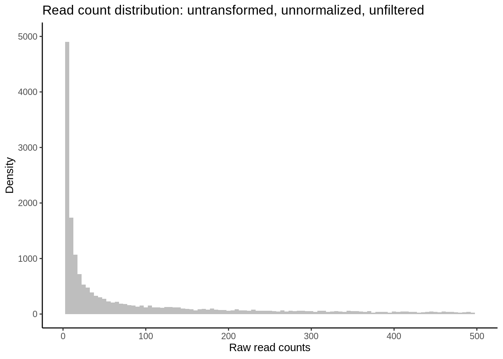
Note
As you can see in the above plot, the raw distribution of all read counts takes on a left-skewed negative binomial distribution.
From the DESeq2 vignette on Pre-filtering:
While it is not necessary to pre-filter low count genes before running the DESeq2 functions, there are two reasons which make pre-filtering useful: by removing rows in which there are very few reads, we reduce the memory size of the
ddsdata object, and we increase the speed of count modeling within DESeq2. It can also improve visualizations, as features with no information for differential expression are not plotted in dispersion plots or MA-plots.Here we perform pre-filtering to keep only rows that have a count of at least 10 for a minimal number of samples. The count of 10 is a reasonable choice for bulk RNA-seq. A recommendation for the minimal number of samples is to specify the smallest group size, e.g. here there are 3 treated samples. If there are not discrete groups, one can use the minimal number of samples where non-zero counts would be considered interesting. One can also omit this step entirely and just rely on the independent filtering procedures available in
results(), either IHW or genefilter. See independent filtering section.
# Filter rows where at least 85% of the columns have a raw count of ~15
gcm_filt <- gcm %>%
filter(rowSums(across(everything(), ~ . > 15)) >= 0.85 * ncol(gcm))
nrow(gcm)[1] 54384nrow(gcm_filt)[1] 112506 Make DESeq Dataset Object
Create a DESeqDataSet design from the gene count matrix and treatment conditions. Here we set the design to test gene expression responses to pollution exposure (C, L, M, H) across developmental stage (4, 9, or 14 hours post fertilization).
From the DESeq2 vignette on The DESeqDataSet:
The object class used by the DESeq2 package to store the read counts and the intermediate estimated quantities during statistical analysis is the DESeqDataSet, which will usually be represented in the code here as an object
dds.A technical detail is that the DESeqDataSet class extends the RangedSummarizedExperiment class of the SummarizedExperiment package. The “Ranged” part refers to the fact that the rows of the assay data (here, the counts) can be associated with genomic ranges (the exons of genes). This association facilitates downstream exploration of results, making use of other Bioconductor packages’ range-based functionality (e.g. find the closest ChIP-seq peaks to the differentially expressed genes).
A DESeqDataSet object must have an associated design formula. The design formula expresses the variables which will be used in modeling. The formula should be a tilde (~) followed by the variables with plus signs between them (it will be coerced into an formula if it is not already). The design can be changed later, however then all differential analysis steps should be repeated, as the design formula is used to estimate the dispersions and to estimate the log2 fold changes of the model.
ImportantIn order to benefit from the default settings of the package, you should put the variable of interest at the end of the formula and make sure the control level is the first level.
From the RNA-seq-workflow
The simplest design formula for differential expression would be
~ condition, whereconditionis a column incolData(dds)that specifies which of two (or more groups) the samples belong to. For the airway experiment, we will specify~ cell + dexmeaning that we want to test for the effect of dexamethasone (dex) controlling for the effect of different cell line (cell). For running DESeq2 models, you can use R’s formula notation to express any fixed-effects experimental design. Note that DESeq2 uses the same formula notation as, for instance, the lm function of base R. If the research aim is to determine for which genes the effect of treatment is different across groups, then interaction terms can be included and tested using a design such as~ group + treatment + group:treatment. See the manual page for?resultsfor more examples.
#Set DESeq2 design for 2 factors and their interaction
dds <- DESeqDataSetFromMatrix(countData = gcm_filt,
colData = metadata,
design = ~ stage + leachate + stage:leachate)6.1 Check factor levels
From the DESeq2 vignette Note on factor levels:
By default, R will choose a reference level for factors based on alphabetical order. Then, if you never tell the DESeq2 functions which level you want to compare against (e.g. which level represents the control group), the comparisons will be based on the alphabetical order of the levels. There are two solutions: you can either explicitly tell results which comparison to make using the
contrastargument (this will be shown later), or you can explicitly set the factors levels. In order to see the change of reference levels reflected in the results names, you need to either runDESeqornbinomWaldTest/nbinomLRTafter the re-leveling operation.
When we read in our metadata we set levels for both the leachate and stage variables
leachate(4 levels)controllowmidhigh
stage(3 levels)cleavageprawnchipearlygastrula
The following code can confirm that DESeq2 sees the levels:
levels(dds$leachate)[1] "control" "low" "mid" "high" levels(dds$stage)[1] "cleavage" "prawnchip" "earlygastrula"6.2 Estimate size factors
In DESeq2, size factors account for differences in sequencing depth (library size) between samples by scaling the per-sample counts to the geometric mean ., making gene expression levels comparable across samples before modeling biological effects.
Display histogram of size factors
dds <- estimateSizeFactors(dds)
hist(sizeFactors(dds))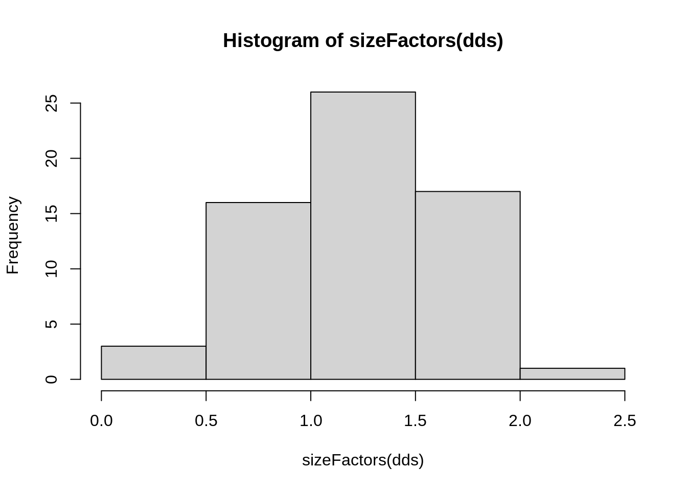
If size factors differ by a large amount (e.g. >4-fold between smallest and largest sample), the VST can over- or under-correct counts, leading to distorted variance patterns or spurious clustering in PCA plots.
DESeq2’s authors (Love, Huber, Anders 2014) note in the vignette: > The VST assumes that the size factors are not extremely different across samples (say all within a factor of 4 of each other). If this is not the case, it may be better to use rlog().
Check that size factors are all less than 4 (should return TRUE)
all(sizeFactors(dds))<4[1] TRUE6.3 Apply a variance stabilizing transformation (VST)
We apply a variance stabilizing transformation (vst) to minimize effects of small counts and normalize for library size. From DESeq vignette on Blind dispersion estimation.-,Blind%20dispersion%20estimation,-The%20two%20functions) :
The two functions, vst and rlog have an argument blind, for whether the transformation should be blind to the sample information specified by the design formula. When blind equals TRUE (the default), the functions will re-estimate the dispersions using only an intercept. This setting should be used in order to compare samples in a manner wholly unbiased by the information about experimental groups, for example to perform sample QA (quality assurance) as demonstrated below.
However, blind dispersion estimation is not the appropriate choice if one expects that many or the majority of genes (rows) will have large differences in counts which are explainable by the experimental design, and one wishes to transform the data for downstream analysis. In this case, using blind dispersion estimation will lead to large estimates of dispersion, as it attributes differences due to experimental design as unwanted noise, and will result in overly shrinking the transformed values towards each other. By setting blind to FALSE, the dispersions already estimated will be used to perform transformations, or if not present, they will be estimated using the current design formula. Note that only the fitted dispersion estimates from mean-dispersion trend line are used in the transformation (the global dependence of dispersion on mean for the entire experiment). So setting blind to FALSE is still for the most part not using the information about which samples were in which experimental group in applying the transformation.
We chose to set blind = FALSE because we expect large differences between embryonic stages (hpf).
vsd <- vst(dds, blind=TRUE)
# extract variance stabilized count matrix
vst_gcm <- assay(vst(dds, blind = TRUE))6.4 Plot distribution of VST counts
# Create a dataframe for ggplot
vst_long <- as_tibble(vst_gcm, rownames = "gene_id") %>%
pivot_longer(-gene_id, names_to = "sample", values_to = "count")
# Plot
ggplot(vst_long, aes(x = count)) +
geom_histogram(fill = "grey") +
theme_classic() +
labs(
title = "Histogram of Variance-Stabilized Counts",
x = "VST-transformed read counts",
y = "Frequency"
)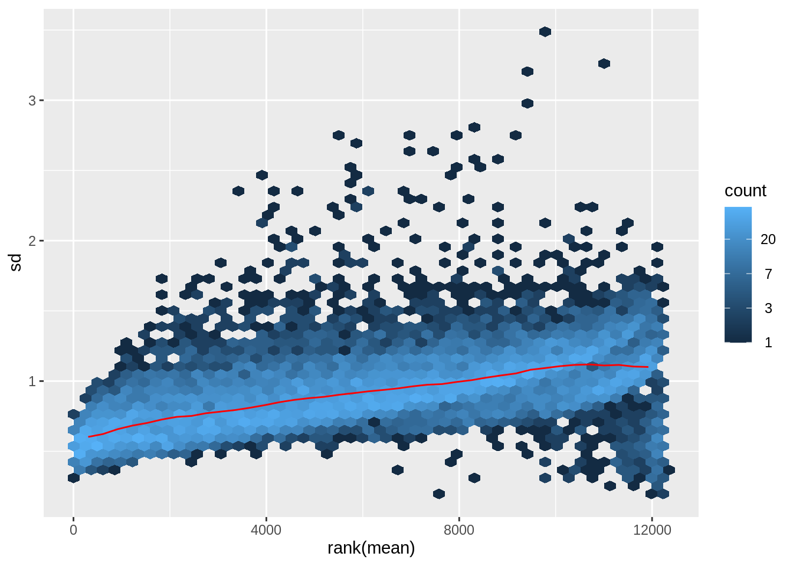
This should look broadly like a normal distribution! If it doesn’t, make your filter stricter to remove more low reads. You can do this by increasing the percent of samples that have to have the minimum count, and/or increase the minimum count back in the pre-filtering step. VST compresses the high-end of the count distribution and expands the low-end, making the variance roughly constant across the range. The resulting values are on an approximate log2 scale but not exact log2(count + 1) — VST is more nuanced, especially for low counts. A range of 5 to 15 corresponds roughly to raw counts ranging from 2³² to 2¹⁵ ≈ 32 to 32,000, so it’s realistic for RNA-seq gene expression data. The remaining spike of low counts in the context of embryonic development is biologically relevant, because we expect many genes to be used only in a specific stage but not in another… leading to chunks of samples from one embryonic stage having zero counts.
6.5 Count transformations
In order to test for differential expression, we operate on raw counts and use discrete distributions… However for visualization or clustering – it might be useful to work with transformed versions of the count data.
Which transformation to choose? The VST is much faster to compute and is less sensitive to high count outliers than the rlog. The rlog tends to work well on small datasets (n < 30), potentially outperforming the VST when there is a wide range of sequencing depth across samples (an order of magnitude difference). We therefore recommend the VST for medium-to-large datasets (n > 30). You can perform both transformations and compare the
meanSdPlotor PCA plots generated…
First we are going to log-transform the data using a variance stabilizing transforamtion (VST). This is only for visualization purposes. Essentially, this is roughly similar to putting the data on the log2 scale. It will deal with the sampling variability of low counts by calculating within-group variability (if blind=FALSE). Importantly, it does not use the design to remove variation in the data, and so can be used to examine if there may be any variability do to technical factors such as extraction batch effects.
To do this we first need to calculate the size factors of our samples. This is a rough estimate of how many reads each sample contains compared to the others. In order to use VST (the faster log2 transforming process) to log-transform our data, the size factors need to be less than 4. - A.Huffmyer Early Life History Energetics
Effects of transformations on the variance
To show the effect of the transformation, in the figure below we plot the first sample against the second, first simply using the log2 function (after adding 1, to avoid taking the log of zero), and then using the VST and rlog-transformed values. For the log2 approach, we need to first estimate size factors to account for sequencing depth, and then specify
normalized=TRUE. Sequencing depth correction is done automatically for the vst and rlog.
The figures below plot the standard deviation of the transformed data, across samples, against the mean, using the shifted logarithm transformation, the regularized log transformation and the variance stabilizing transformation. The shifted logarithm has elevated standard deviation in the lower count range, and the regularized log to a lesser extent, while for the variance stabilized data the standard deviation is roughly constant along the whole dynamic range.
Note that the vertical axis in such plots is the square root of the variance over all samples, so including the variance due to the experimental conditions. While a flat curve of the square root of variance over the mean may seem like the goal of such transformations, this may be unreasonable in the case of datasets with many true differences due to the experimental conditions.
df <- bind_rows(
as.data.frame(log2(counts(dds, normalized=TRUE)[, 1:2]+1)) %>%
mutate(transformation = "log2(x + 1)"),
as.data.frame(vst_gcm[, 1:2]) %>% mutate(transformation = "vst"))
colnames(df)[1:2] <- c("x", "y")
lvls <- c("log2(x + 1)", "vst")
df$transformation <- factor(df$transformation, levels=lvls)
ggplot(df, aes(x = x, y = y)) +
geom_hex(bins = 80) +
coord_fixed() +
facet_grid(. ~ transformation) +
ggtitle("All Samples Interaction design Count Transformation Comparisons")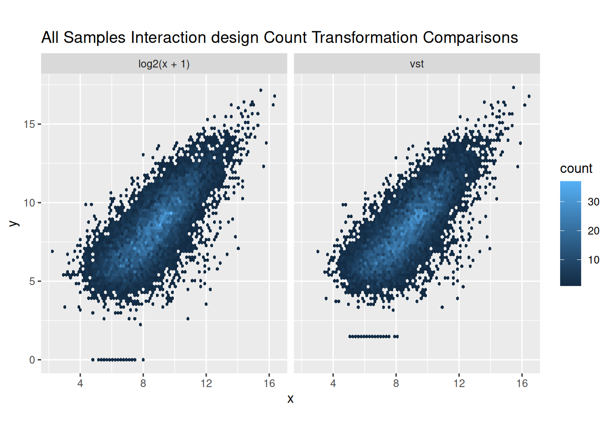
meanSdPlot(vst_gcm)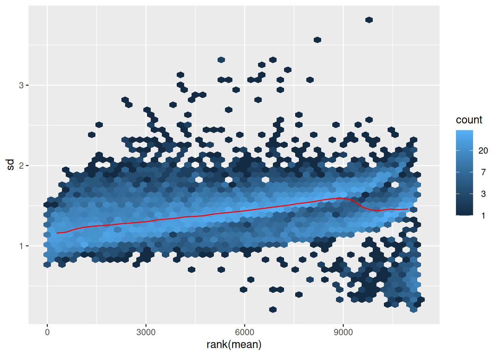
7 Perform exploratory PCA
A principal components analysis (PCA) plot shows the samples in the 2D plane spanned by their first two principal components. This type of plot is useful for visualizing outliers, the overall effect of experimental covariates, and batch effects.
# Get PCA data (top 500 DEGs by default)
pca_500 <- plotPCA(vsd, intgroup = "group", returnData = TRUE)
percentVar_500 <- round(100*attr(pca_500, "percentVar"))
# Merge with metadata
pca_500 <- merge(pca_500, metadata, by.x = "name", by.y = "sample_id", all.x = TRUE)# Assign specific colors to each hpf
stage_colors <- c("red", "blue", "green")
pca_500$label <- paste0("Sample: ", pca_500$sample_id,
"\nHPF: ", pca_500$hpf,
"\nLeachate: ", pca_500$leachate)
# Plot PCA
PCA_500 <- ggplot(pca_500, aes(PC1, PC2, color = stage, shape = leachate, label = label)) +
geom_point(size = 1) +
ggtitle("M.cap embryos exposed to pvc leachate, top 500 most variable genes") +
xlab(paste0("PC1: ", percentVar_500[1], "% variance")) +
ylab(paste0("PC2: ", percentVar_500[2], "% variance")) +
coord_fixed() +
scale_color_manual(values = stage_colors) +
theme_minimal()+
theme(panel.grid.major = element_blank(),
panel.grid.minor = element_blank())# Convert to interactive plot
ggplotly(PCA_500, tooltip = "label")From this we can visually detect that 131415L4 and 789C4 may be outliers
#label the outliers
labels_to_show <- c("131415L4", "789C4") # the two names to label
PCA_500 + geom_text_repel(
data = pca_500 %>% filter(name %in% labels_to_show),
aes(label = name),
seed = 123, # reproducible placement
show.legend = FALSE
)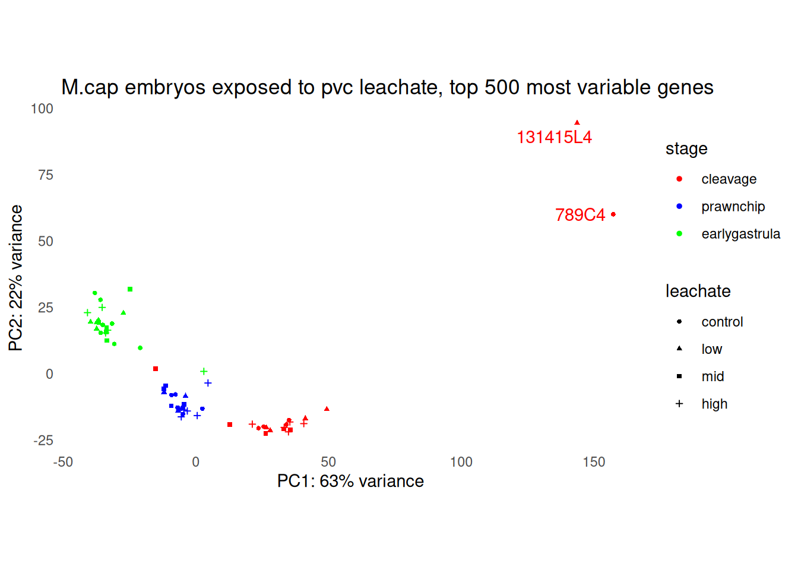
7.1 Identify outliers
… we usually identify any sample that falls outside the main group of samples by a magnitude (along PC1) of greater than 3 standard deviations. Mathematically, all that you need to do is convert your PC1 values to Z-scores and then check for those greater than 3. In R, get these by using prcomp() and then accessing the ‘x’ variable of the returned object, e.g.,
pca <- prcomp(t(rna.data); pca$x… –Kevin Blighe on biostars forum
# Extract PC values
pca_scores <- pca_500[ , c("PC1", "PC2", "name")]
# Convert PC scores to Z-scores
pca_scores$zpc1 <- scale(pca_scores$PC1)
pca_scores$zpc2 <- scale(pca_scores$PC2)
# Show samples with Z-score > |3|
pca_scores %>%
dplyr::filter(zpc1 > 3 | zpc2 > 3)| PC1 | PC2 | name | zpc1 | zpc2 |
|---|---|---|---|---|
| 143.6963 | 94.43846 | 131415L4 | 3.784800 | 4.254475 |
| 157.3331 | 60.08401 | 789C4 | 4.143978 | 2.706799 |
Important
Their z-scores are greater than 3 standard deviations from the group, and visually samples 131415L4 and 789C4may be outliers in the cleavage phase, as they have the greatest spread from the centroid of hpf 4, and also from the rest of the samples. The hpf 4 data is expected to be the least consistent because at 4 hpf, the eggs were just on the cusp of beginning initial cleavage, meaning many of the embryos still appeared as an undivided blastocyle, and we could therefore not determine if the egg was fertilized and about to initiate cleavage, or unfertilized and inviable.
7.2 Remove the outliers
7.2.1 From metadata
metadata_or <- metadata %>%
filter(!(sample_id == "131415L4")) %>%
filter(!(sample_id == "789C4"))7.2.2 From gene count matrix
gcm_or <- gcm %>%
dplyr::select(-`131415L4`, -`789C4`)
dim(gcm_or)[1] 54384 617.2.3 Refilter
# Filter rows where at least 85% of the columns have a value greater than 15
gcm_filtor <- gcm_or %>%
filter(rowSums(across(everything(), ~ . > 15)) >= 0.85 * ncol(gcm_or))
nrow(gcm_filtor)[1] 11586
Note
11250 genes made it past our filter when outliers were present, 11586 made it past the filter without outlier samples in our gene count matrix.
8 Remake DESeq Object
dds_or <- DESeqDataSetFromMatrix(countData = gcm_filtor,
colData = metadata_or,
design = ~ stage + leachate + stage:leachate)8.1 Redo count transformations
dds_or <- estimateSizeFactors(dds_or)
hist(sizeFactors(dds_or))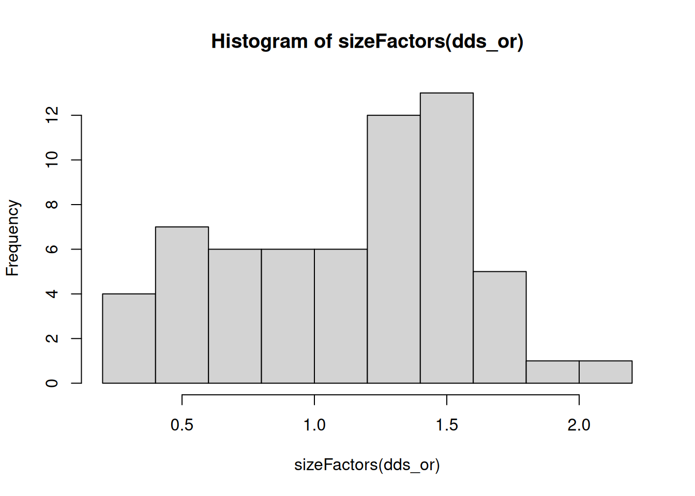
all(sizeFactors(dds_or))<4[1] TRUEvsd_or <- vst(dds_or, blind=FALSE)df <- bind_rows(
as_data_frame(log2(counts(dds_or, normalized=TRUE)[, 1:2]+1)) %>%
mutate(transformation = "log2(x + 1)"),
as_data_frame(assay(vsd_or)[, 1:2]) %>% mutate(transformation = "vst"))
colnames(df)[1:2] <- c("x", "y")
lvls <- c("log2(x + 1)", "vst")
df$transformation <- factor(df$transformation, levels=lvls)
ggplot(df, aes(x = x, y = y)) +
geom_hex(bins = 80) +
coord_fixed() +
facet_grid(. ~ transformation) +
ggtitle("All Samples Count Transformation Comparisons with Outliers Removed")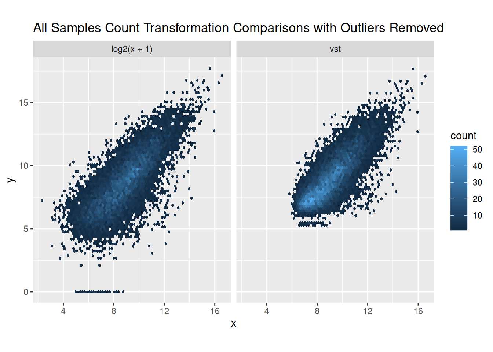
meanSdPlot(assay(vsd_or))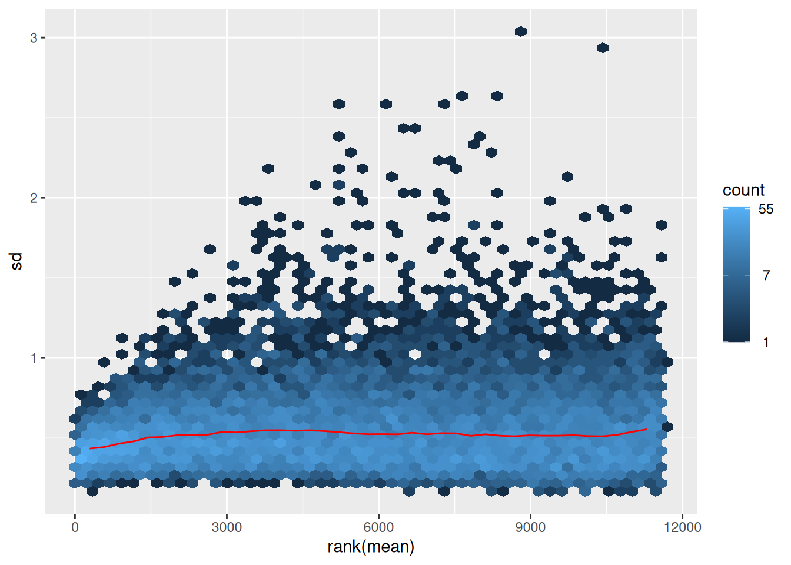
8.2 Remake PCA
A principal components analysis (PCA) plot shows the samples in the 2D plane spanned by their first two principal components. This type of plot is useful for visualizing the overall effect of experimental covariates and batch effects.
# Get PCA data (top 500 DEGs by default)
pca_500_or <- plotPCA(vsd_or, intgroup = "group", returnData = TRUE)
percentVar_500_or <- round(100*attr(pca_500, "percentVar"))
# Merge with metadata
pca_500_or <- merge(pca_500_or, metadata_or, by.x = "name", by.y = "sample_id", all.x = TRUE)
# Assign specific colors to each stage
stage_colors <- c("red", "blue", "green")
pca_500_or$label <- paste0("sample: ", pca_500_or$sample_id,
"\nHpf: ", pca_500_or$hpf,
"\nLeachate: ", pca_500_or$leachate)
# PCA with outlier samples removed
PCA_500_or <- ggplot(pca_500_or, aes(PC1, PC2, color = stage, shape = leachate, label = name)) +
geom_point(size = 1, stroke = 1) +
ggtitle("M.cap embryos exposed to pvc leachate, top 500 most variable genes") +
xlab(paste0("PC1: ", percentVar_500[1], "% variance")) +
ylab(paste0("PC2: ", percentVar_500[2], "% variance")) +
coord_fixed() +
scale_color_manual(values = stage_colors) +
stat_ellipse(aes(group = stage, color = stage), linewidth = 0.4, show.legend = FALSE) +
theme_minimal() +
theme(panel.grid.major = element_blank(),
panel.grid.minor = element_blank())# Convert to interactive plot
ggplotly(PCA_500_or, tooltip = "label")PCA_500_or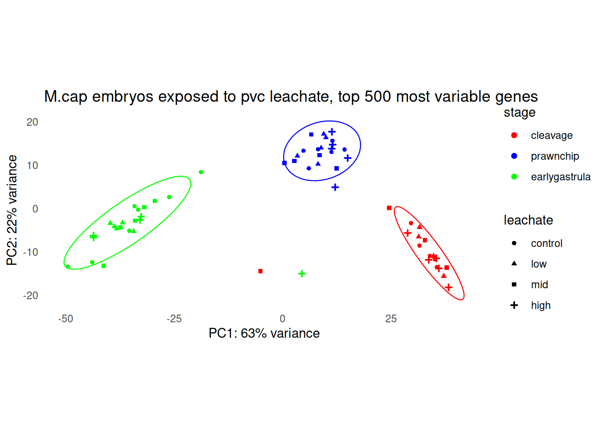
We can see there is strong clustering by developmental stage. It’s difficult to see if there is any other clustering pattern (by leachate, or by nuisance batch effects). Let’s explore those further…
9 Examine for batch effects
PCA_500_leachate <- ggplot(pca_500_or, aes(PC1, PC2, color = leachate, label = name)) +
geom_point(size = 1, stroke = 1) +
ggtitle("M.cap embryos exposed to pvc leachate, top 500 most variable genes") +
xlab(paste0("PC1: ", percentVar_500[1], "% variance")) +
ylab(paste0("PC2: ", percentVar_500[2], "% variance")) +
coord_fixed() +
scale_color_manual(values = leachate_colors) +
stat_ellipse(aes(group = leachate, color = leachate), linewidth = 0.4, show.legend = FALSE) +
theme_minimal() +
theme(panel.grid.major = element_blank(),
panel.grid.minor = element_blank())
PCA_500_leachate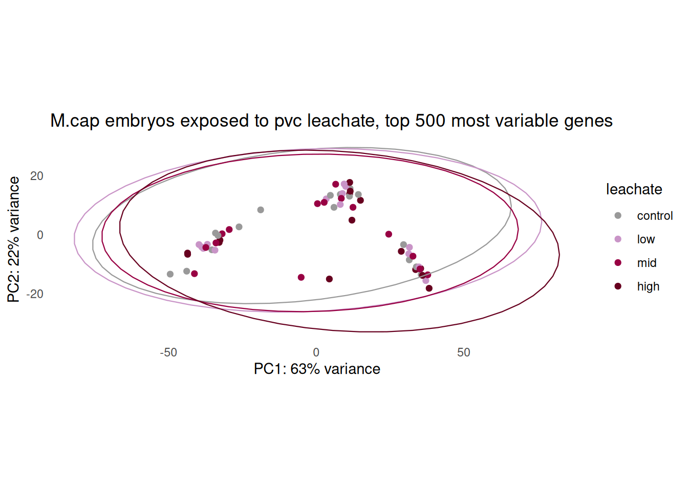
# Convert to interactive plot
ggplotly(PCA_500_leachate, tooltip = "label")PCA_500_spawnnight <- ggplot(pca_500_or, aes(PC1, PC2, color = spawn_night, label = name)) +
geom_point(size = 1, stroke = 1) +
ggtitle("M.cap embryos exposed to pvc leachate, top 500 most variable genes") +
xlab(paste0("PC1: ", percentVar_500[1], "% variance")) +
ylab(paste0("PC2: ", percentVar_500[2], "% variance")) +
coord_fixed() +
#scale_color_manual(values = leachate_colors) +
stat_ellipse(aes(group = spawn_night, color = spawn_night), linewidth = 0.4, show.legend = FALSE) +
theme_minimal() +
theme(panel.grid.major = element_blank(),
panel.grid.minor = element_blank())
PCA_500_spawnnight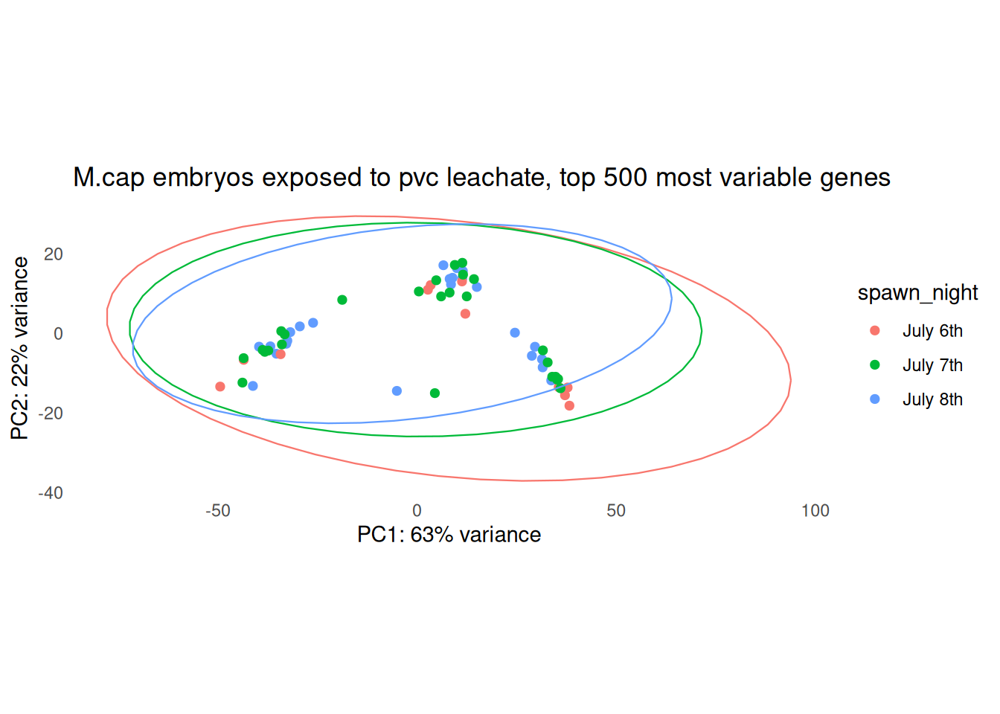
# Convert to interactive plot
ggplotly(PCA_500_spawnnight, tooltip = "label")pca_plot_spawn_night <- ggplot(
pca_500_or,
aes(
x = PC1, y = PC2,
fill = stage, # inside color
colour = factor(spawn_night), # outline color
shape = leachate # shape must be 21–25
)
) +
geom_point(size = 3.5, stroke = 1.5, alpha = 0.8) + # stroke controls outline width
scale_shape_manual(values = c(21, 22, 23, 24, 25)[seq_along(levels(pca_500_or$leachate))]) +
scale_fill_grey(name = "Stage", start = 0.1, end = 1) +
labs(
title = "PCA of top 500 DEGs by Stage, Leachate, and Spawn night",
x = paste0("PC1: ", percentVar_500[1], "% variance"),
y = paste0("PC2: ", percentVar_500[2], "% variance"),
shape = "Leachate",
color = "Spawn night"
) +
theme_minimal() +
theme(
legend.position = "right",
plot.title = element_text(hjust = 0.5)
)+
# 3) make the fill legend draw a filled shape with an outline
guides(
shape = guide_legend(order = 1),
fill = guide_legend(override.aes = list(shape = 21, stroke = 1.1, colour = "black"),
order = 2),
colour = guide_legend(order = 3)
)
pca_plot_spawn_night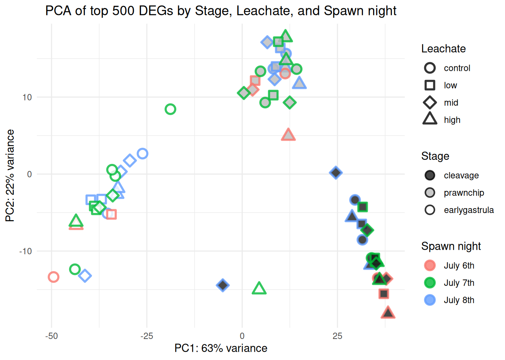
It seems like there may be clustering by spawn night within the cleavage stage only?
9.1 betadispr
Compute distance between samples We apply a variance stabilizing transformation (vst) to minimize effects of small counts and normalize for library size. Note: t() transposes. The code t(assay(vst(dds_cat, blind = TRUE))) flips the matrix to samples as rwos × genes as columns. Functions like vegan::vegdist() and adonis2() expect rows = samples, columns = features. Use the transposed matrix for PERMANOVA such that rows are samples with a 1 to 1 match of samples in our metadata dataframe.
# extract variance stabilized count matrix
vst_gcm <- assay(vst(dds_or, blind = TRUE))
# transpose
vst_t_gcm <- t(vst_gcm) # rows are samples, columns are geneseu_dist <- vegdist((vst_t_gcm), method = "eu")grp_leachate <- metadata_or$leachate
grp_stage <- metadata_or$stage
grp_int <- interaction(metadata_or$leachate, metadata_or$stage)
grp_night <- metadata_or$spawn_night9.1.1 night
# Fit beta dispersion model
bd_night <- betadisper(eu_dist, group = grp_night, type = "centroid")
# Permutation test with no blocking
perm_night <- permutest(bd_night, permutations = 999, pairwise = FALSE)
# Result
perm_night
Permutation test for homogeneity of multivariate dispersions
Permutation: free
Number of permutations: 999
Response: Distances
Df Sum Sq Mean Sq F N.Perm Pr(>F)
Groups 2 5406 2702.82 4.7718 999 0.012 *
Residuals 58 32852 566.42
---
Signif. codes: 0 '***' 0.001 '**' 0.01 '*' 0.05 '.' 0.1 ' ' 1plot(bd_night, hull = TRUE, ellipse = TRUE, label = FALSE, cex = 0.8)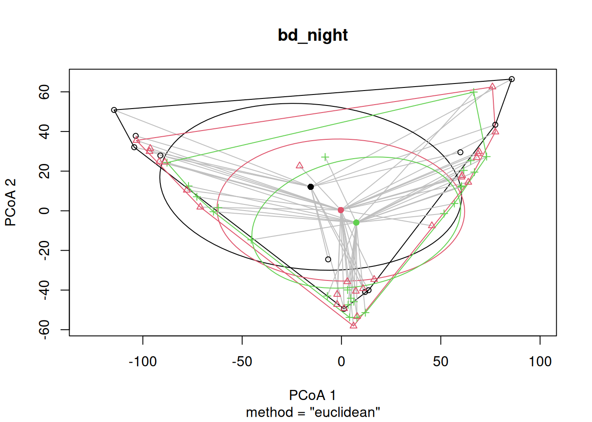
9.1.2 leachate
bd_leachate <- betadisper(eu_dist, group = grp_leachate, type = "centroid")
# Permutation test with optional blocking
perm_leachate <- permutest(bd_leachate, permutations = 999, pairwise = FALSE)
perm_leachate
Permutation test for homogeneity of multivariate dispersions
Permutation: free
Number of permutations: 999
Response: Distances
Df Sum Sq Mean Sq F N.Perm Pr(>F)
Groups 3 1275 425.11 0.67 999 0.561
Residuals 57 36165 634.47 plot(bd_leachate, hull = TRUE, ellipse = TRUE, label = FALSE, cex = 0.8)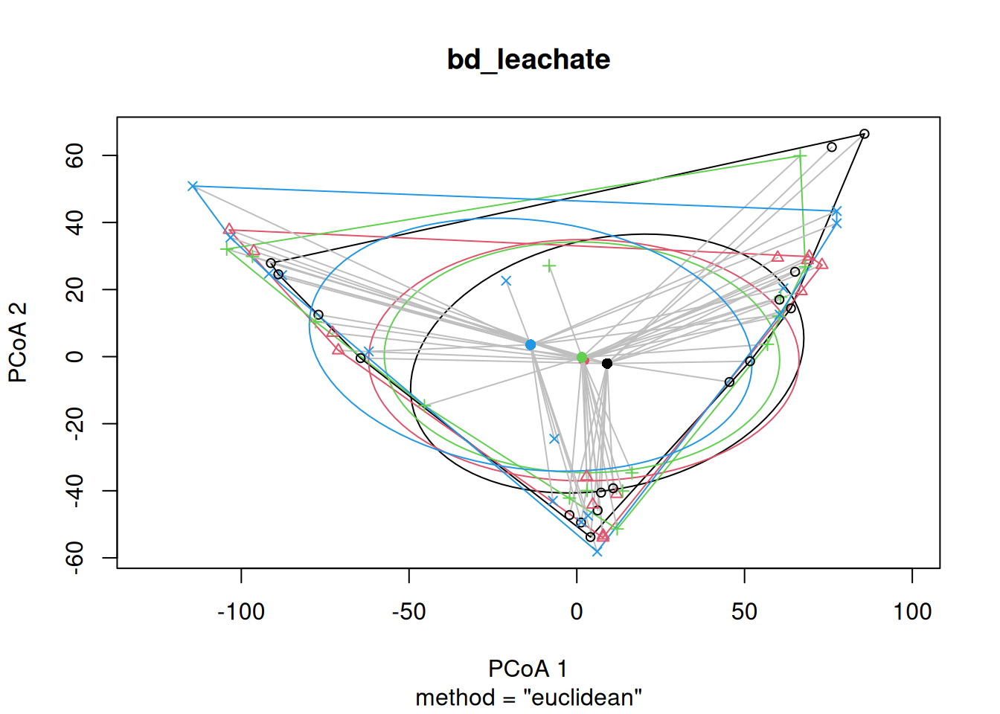
9.1.3 stage
bd_stage <- betadisper(eu_dist, group = grp_stage, type = "centroid")
# Permutation test with optional blocking
perm_stage <- permutest(bd_stage, permutations = 999, pairwise = FALSE)
perm_stage
Permutation test for homogeneity of multivariate dispersions
Permutation: free
Number of permutations: 999
Response: Distances
Df Sum Sq Mean Sq F N.Perm Pr(>F)
Groups 2 8265.1 4132.6 14.056 999 0.001 ***
Residuals 58 17052.2 294.0
---
Signif. codes: 0 '***' 0.001 '**' 0.01 '*' 0.05 '.' 0.1 ' ' 1plot(bd_stage, hull = TRUE, ellipse = TRUE, label = FALSE, cex = 0.8)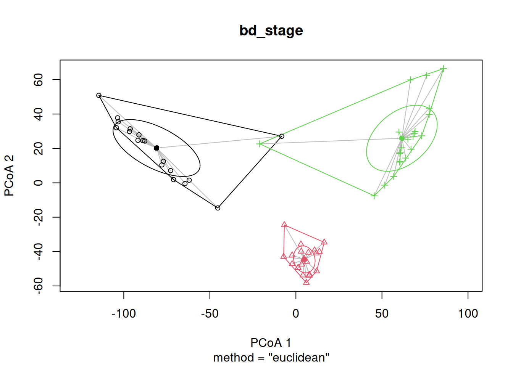
9.1.4 leachate x stage
bd_int <- betadisper(eu_dist, group = grp_int, type = "centroid")
# Permutation test
perm_int <- permutest(bd_int, permutations = 999, pairwise = FALSE)
perm_int
Permutation test for homogeneity of multivariate dispersions
Permutation: free
Number of permutations: 999
Response: Distances
Df Sum Sq Mean Sq F N.Perm Pr(>F)
Groups 11 9135.7 830.52 4.7746 999 0.001 ***
Residuals 49 8523.4 173.95
---
Signif. codes: 0 '***' 0.001 '**' 0.01 '*' 0.05 '.' 0.1 ' ' 1plot(bd_int, hull = TRUE, ellipse = TRUE, label = FALSE, cex = 0.8)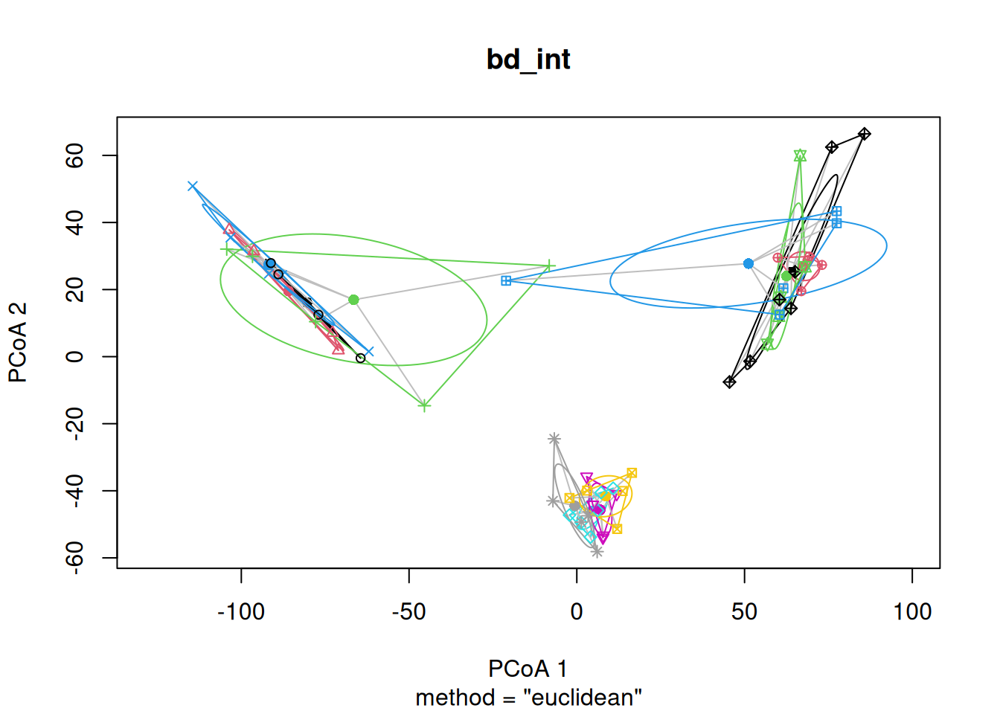
10 PERMANOVA
Run adonis2 to build PERMANOVA model ::: callout-note Because adonis2() uses random permutations to get p-values. Without fixing the seed, each run draws a different set/order of permutations, which results in tiny differences in F-stats/p-values. By adding set.seed(1) the permutation stream is reproducible so you (and future you) get the same numbers. :::
set.seed(11042025)
permanova_result <- adonis2(eu_dist ~ leachate * stage,
data = metadata_or,
permutations = 999,
strata = metadata_or$spawn_night, # <-- control for spawn night
by = "terms")
permanova_result| Df | SumOfSqs | R2 | F | Pr(>F) | |
|---|---|---|---|---|---|
| leachate | 3 | 10468.57 | 0.0233499 | 1.0864480 | 0.338 |
| stage | 2 | 264787.92 | 0.5906039 | 41.2202870 | 0.001 |
| leachate:stage | 6 | 15696.36 | 0.0350104 | 0.8144989 | 0.679 |
| Residual | 49 | 157381.34 | 0.3510358 | NA | NA |
| Total | 60 | 448334.18 | 1.0000000 | NA | NA |
# Save results
write.csv(as.data.frame(permanova_result),
"../../output/05_explore/permanova_result_fullgeneset.csv",
row.names = TRUE)
Note
A PERMANOVA with 999 permutations (permutations restricted within spawn night) revealed that developmental stage explained the majority of variation in multivariate gene-expression profiles (\(F_{2,49} = 45.0\), \(R^2 = 0.613\), \(p = 0.001\)). Neither leachate concentration (\(F_{3,49} = 1.09\), \(R^2 = 0.022\), \(p = 0.375\)) nor the leachate,×,stage interaction (\(F_{6,49} = 0.78\), \(R^2 = 0.032\), \(p = 0.697\)) had a significant effect. Overall, the model explained 66.7% of the variance in gene-expression dissimilarity, with stage accounting for (59%) nearly all of the explained variation.
These results indicate that transcriptomic profiles differed strongly among developmental stages but not across leachate concentrations or their interaction, suggesting that developmental processes dominate gene-expression variation in this dataset.
Why does the permanova say leachate and leachate:stage is insignificant but DESeq2 results return significantly differentially expressed genes for those terms?
PERMANOVA is a single multivariate test on a distance among samples
It asks whether group centroids differ (and a bit of spread, depending on dispersion). If leachate shifts are modest, bidirectional, or limited to a subset of genes, the overall centroid shift can be tiny → non-sig.
Dominant developmental stage signal
Your term table shows stage explains ~61% of variance; that can swamp smaller leachate signals. After blocking by parents, the residual degrees of freedom and variability left to detect leachate are limited.
Your DESeq2 results might be stage-specific contrasts (e.g., leachate within stage), while your PERMANOVA tested a single global leachate and interaction term. The global test can be ns even if some stages have effects.
11 Heatmap
Set themes and metadata.
# Extract the annotation dataframe
df <- as.data.frame(colData(vsd_or)[ , c("leachate", "stage", "spawn_night")])
legend_names_col = colnames(assay(vsd_or))
names(df)<- c("leachate", "stage", "spawn_night")
rownames(df) <- legend_names_col
# Specify colors
leachate_colors <- c(control = "grey60",
low = "#C994C7",
mid = "#980043",
high = "#67001F")
stage_colors <- c(cleavage = "red",
prawnchip = "blue",
earlygastrula = "green")
spawn_colors <- c("July 6th" = "coral",
"July 7th" = "yellow",
"July 8th" = "orange")
ann_colors = list(
leachate = leachate_colors,
stage = stage_colors,
spawn_night = spawn_colors
)Plot heatmap of z-scores of differential expression.
# Make the matrix
mat <- assay(vsd_or)
# Display the heatmap
pheatmap(
mat,
scale = "row", # z-scores by row
color = viridisLite::inferno(200), # smoother gradient
cluster_rows = TRUE,
cluster_cols = TRUE,
clustering_distance_rows = "euclidean",
clustering_distance_cols = "euclidean",
cutree_rows = 3,
show_rownames = FALSE,
show_colnames = TRUE, # set TRUE if using labels_col
labels_col = legend_names_col, # remove or keep as needed
fontsize_row = 3,
annotation_col = df,
annotation_colors = ann_colors,
border_color = NA # cleaner look (optional)
)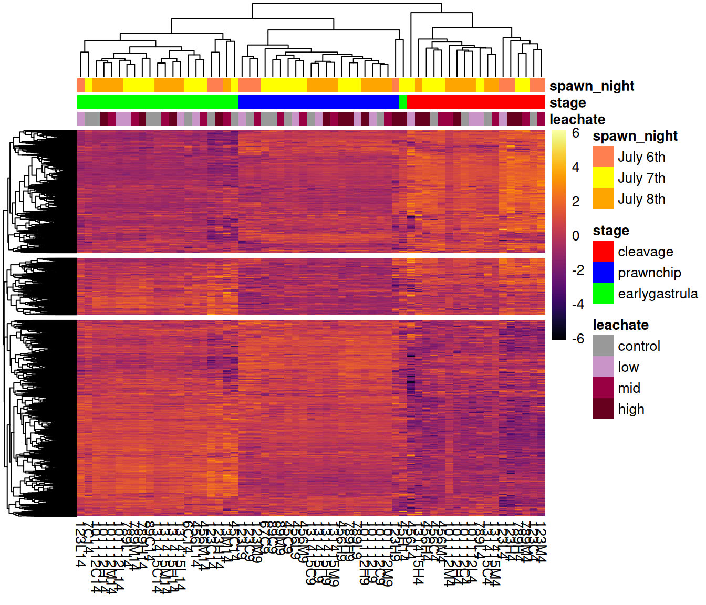
# save the pheatmap
png("../../output/05_explore/zscore_heatmap.png", width = 2000, height = 1800, res = 300)
pheatmap(
mat,
scale = "row", # z-scores by row
color = viridisLite::inferno(200), # smoother gradient
cluster_rows = TRUE,
cluster_cols = TRUE,
clustering_distance_rows = "euclidean",
clustering_distance_cols = "euclidean",
cutree_rows = 3,
show_rownames = FALSE,
show_colnames = TRUE, # set TRUE if using labels_col
labels_col = legend_names_col, # remove or keep as needed
fontsize_row = 3,
annotation_col = df,
annotation_colors = ann_colors,
border_color = NA # cleaner look (optional)
)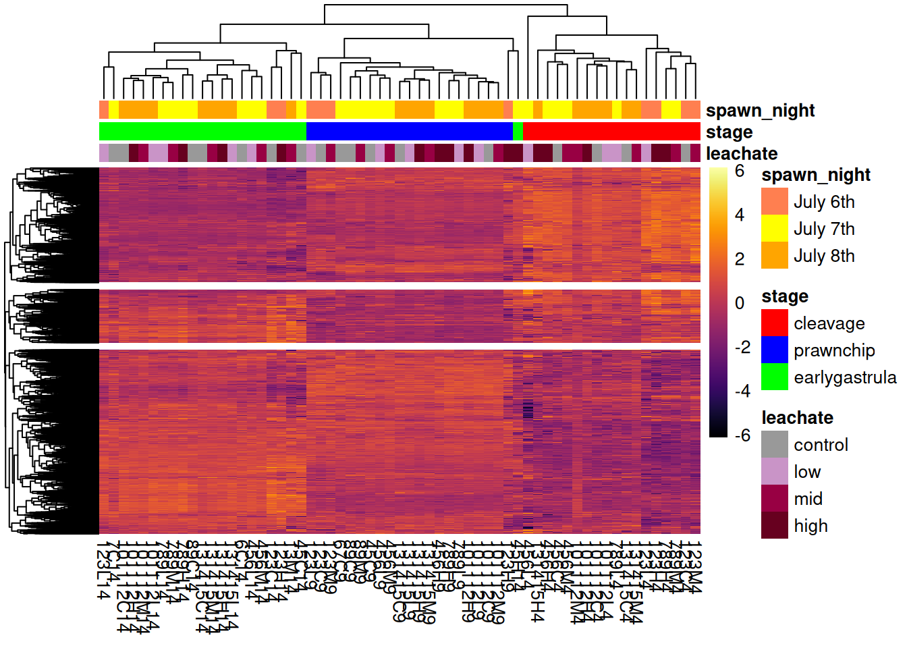
dev.off()png
3 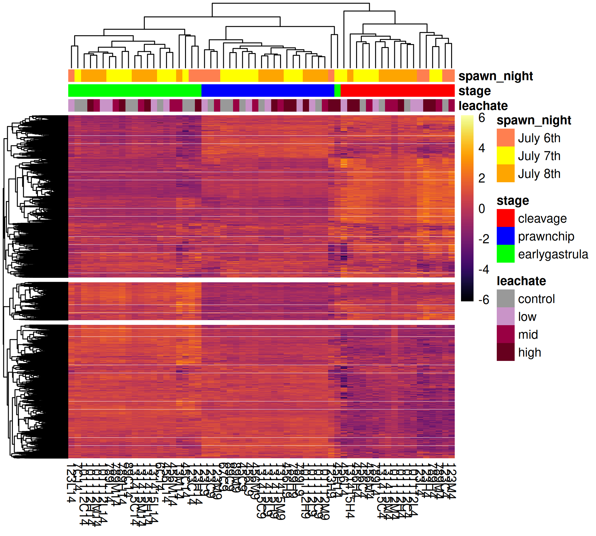
12 Summary
- We filtered our gene count matrix to where at least 85% of the samples have a raw count of ~15. Even doing this, we had a ‘spike’ of samples with
0gene counts, an artifact of strong developmental stage differences.
We can see both via the PCA and the heatmap that our data groups largely by stage, aka hours post fertilization (hpf). There is some nuisance clustering by spawn_night. There is no obvious pattern by leachate. Any leachate effects are going to be very subtle in comparison to the differential expression due to stage. Do we have enough power to ‘pick the needle out of the haystack?’
13 Next steps
Next we are going to dive into the results of the DESeq2 likelihood ratio test and Wald test to further interpret the main effect of leachate and the interaction term in our design (~ spawn_night + stage + leachate + hpf:leachate)
We also aim to:
Identify transcripts significantly impacted across our samples by
leachateandleachate:stageLook for non-monotonic (aka non-linear) responses (are there non-linear effects of
leachate, as we hypothesized we would see if PVCleachateis following a common endocrine disrupting pattern?)
# save gene count matrix
gcm_filtor_rownames <- gcm_filtor %>%
rownames_to_column(var = "gene_id")
head(gcm_filtor_rownames)| gene_id | 101112C14 | 101112C4 | 101112C9 | 101112H14 | 101112H4 | 101112H9 | 101112L14 | 101112L4 | 101112L9 | 101112M14 | 101112M4 | 101112M9 | 123C14 | 123C4 | 123C9 | 123H14 | 123H4 | 123H9 | 123L14 | 123L4 | 123L9 | 123M4 | 123M9 | 131415C14 | 131415C4 | 131415C9 | 131415H14 | 131415H4 | 131415H9 | 131415L14 | 131415L9 | 131415M14 | 131415M4 | 131415M9 | 13M14 | 456C4 | 456H4 | 456H9 | 456L14 | 456L4 | 456L9 | 456M14 | 456M4 | 456M9 | 45C14 | 45C9 | 45H14 | 67C9 | 6C14 | 789H14 | 789H4 | 789H9 | 789L14 | 789L4 | 789L9 | 789M14 | 789M4 | 7C14 | 89C14 | 89C9 | 89M9 |
|---|---|---|---|---|---|---|---|---|---|---|---|---|---|---|---|---|---|---|---|---|---|---|---|---|---|---|---|---|---|---|---|---|---|---|---|---|---|---|---|---|---|---|---|---|---|---|---|---|---|---|---|---|---|---|---|---|---|---|---|---|---|
| Montipora_capitata_HIv3___RNAseq.g4581.t1 | 176 | 458 | 395 | 195 | 144 | 351 | 156 | 187 | 360 | 215 | 199 | 386 | 63 | 714 | 351 | 138 | 384 | 146 | 190 | 271 | 304 | 771 | 154 | 198 | 321 | 371 | 196 | 221 | 410 | 170 | 362 | 291 | 271 | 396 | 71 | 196 | 351 | 236 | 125 | 73 | 274 | 151 | 454 | 250 | 50 | 348 | 411 | 290 | 114 | 150 | 516 | 332 | 168 | 148 | 409 | 150 | 461 | 208 | 235 | 273 | 230 |
| Montipora_capitata_HIv3___RNAseq.g4582.t1 | 1137 | 380 | 934 | 882 | 326 | 1337 | 1101 | 392 | 1195 | 1311 | 431 | 1076 | 643 | 496 | 1064 | 927 | 378 | 864 | 884 | 270 | 838 | 650 | 516 | 1184 | 712 | 1338 | 1314 | 382 | 1117 | 1167 | 1500 | 1376 | 667 | 1383 | 912 | 306 | 458 | 1301 | 1306 | 249 | 1105 | 1270 | 525 | 967 | 420 | 981 | 590 | 973 | 1022 | 862 | 628 | 1338 | 1027 | 445 | 1326 | 959 | 551 | 711 | 1563 | 1349 | 823 |
| Montipora_capitata_HIv3___RNAseq.g4583.t1 | 2043 | 905 | 1848 | 1847 | 945 | 2087 | 1625 | 1039 | 2367 | 1875 | 1176 | 2230 | 1349 | 1591 | 1529 | 1377 | 648 | 1902 | 2007 | 630 | 1572 | 1258 | 892 | 2175 | 1667 | 2190 | 1932 | 716 | 2219 | 1817 | 2102 | 2108 | 1395 | 2314 | 1639 | 651 | 987 | 1882 | 1882 | 1050 | 2506 | 1649 | 940 | 2005 | 703 | 2230 | 1807 | 1995 | 1769 | 1633 | 1128 | 2429 | 1616 | 819 | 2344 | 1757 | 1111 | 1874 | 2623 | 2594 | 1646 |
| Montipora_capitata_HIv3___RNAseq.g4584.t1 | 2641 | 452 | 706 | 1917 | 266 | 625 | 2301 | 367 | 668 | 1963 | 800 | 706 | 2724 | 703 | 648 | 3178 | 497 | 438 | 1867 | 330 | 366 | 677 | 397 | 1556 | 510 | 473 | 2267 | 334 | 326 | 2772 | 534 | 2296 | 404 | 492 | 2194 | 291 | 547 | 488 | 1736 | 169 | 495 | 1698 | 522 | 595 | 1402 | 913 | 1021 | 310 | 1435 | 2783 | 963 | 783 | 2549 | 313 | 686 | 2913 | 906 | 1307 | 2195 | 778 | 624 |
| Montipora_capitata_HIv3___RNAseq.g4585.t1 | 521 | 17 | 161 | 304 | 33 | 243 | 449 | 20 | 190 | 350 | 103 | 198 | 641 | 25 | 146 | 426 | 9 | 208 | 368 | 31 | 87 | 15 | 90 | 310 | 18 | 208 | 453 | 0 | 106 | 434 | 129 | 375 | 48 | 117 | 527 | 29 | 11 | 87 | 384 | 35 | 198 | 257 | 28 | 154 | 289 | 137 | 238 | 167 | 169 | 489 | 21 | 158 | 457 | 34 | 130 | 501 | 30 | 267 | 355 | 271 | 166 |
| Montipora_capitata_HIv3___RNAseq.g4586.t1 | 121 | 33 | 81 | 116 | 17 | 98 | 114 | 45 | 89 | 109 | 18 | 155 | 78 | 51 | 114 | 121 | 21 | 32 | 116 | 8 | 62 | 64 | 40 | 143 | 39 | 154 | 82 | 15 | 65 | 154 | 144 | 156 | 87 | 90 | 92 | 55 | 29 | 117 | 113 | 0 | 77 | 72 | 30 | 65 | 17 | 50 | 13 | 77 | 81 | 75 | 68 | 172 | 83 | 16 | 82 | 93 | 51 | 55 | 98 | 105 | 42 |
write.csv(gcm_filtor_rownames, file = "../../output/05_explore/gcm_filtor.csv", row.names=FALSE)
# output metadata for other analyses
write_csv(metadata_or, "../../metadata/metadata_or.csv")Color schemes for data visualizations to carry through the remaining analysis steps:
# Specify colors
leachate_colors <- c(control = "grey60",
low = "#C994C7",
mid = "#980043",
high = "#67001F")
stage_colors <- c(cleavage = "red",
prawnchip = "blue",
earlygastrula = "green")
spawn_colors <- c("July 6th" = "coral",
"July 7th" = "yellow",
"July 8th" = "orange")
ann_colors = list(
leachate = leachate_colors,
stage = stage_colors,
spawn_night = spawn_colors
)